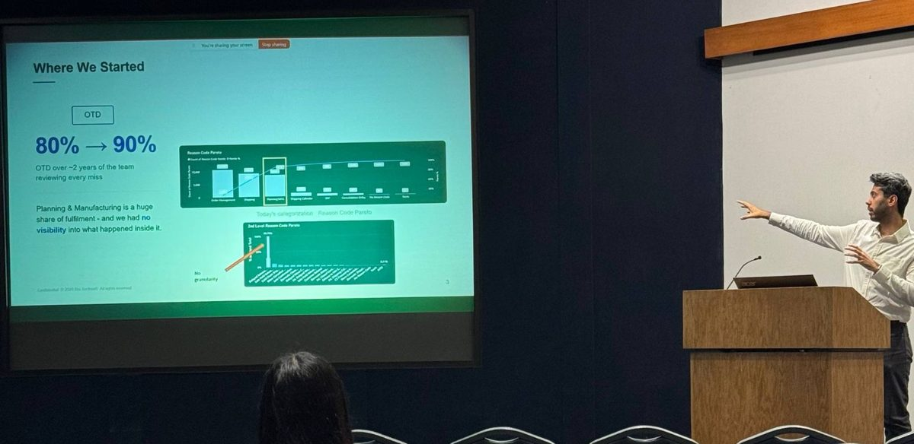

Bio-Techne · Operations & Supply Chain · May 2026 – present
Promise to delivery.
As a Graduate Data Analyst Intern on the Strategic Supply Chain team, I worked on one question with two halves: why did past orders miss their promise date, and which open orders are about to?


The business problem
On-time delivery is a promise to the customer.
For a life-sciences supplier, a late order means a researcher or clinician is left waiting. The team reviewed every missed order by hand and had made real progress. But planning and manufacturing make up a large share of fulfillment, and the data showed almost nothing about what went wrong inside them.
So I started by learning the operation rather than the tables. I followed how an order moves through planning, production, QC and shipping, and I learned who owns each step. Only then did I decide what "root cause" should mean in the data.
What I built
Understanding the past, predicting the future
Automated root-cause attribution
I built a SQL and Power BI pipeline that assigns each on-time-delivery miss to its delay category: production, QC, planning, lead time or shipping. It replaced manual order-by-order review with attribution that is consistent and auditable.
Rebuilding history the ERP never stored
You can't blame a stockout without knowing what was actually on the shelf that day. I rebuilt historical on-hand inventory from ERP/MRP transactions so that every late order could be judged against the stock that existed at the time.
Decision tools for planners
I built a historical stock lookup, demand profiles, lead-time benchmarks and a forward stock projection for backlog orders. They also flag production and QC steps that are already running late on live orders. Planners and supply chain directors use them directly.
Predicting the next miss
I built machine-learning models in Python on Databricks that forecast demand and OTD-miss risk. They flag at-risk open orders before the promise date and inform stock policy, so the team moves from explaining misses to preventing them.
Big, messy data
Most of the work is making the data trustworthy.
ERP data records what the system was told, not always what happened. Along the way I found and fixed systemic data-quality and integrity gaps. Those fixes made the planning and inventory analytics reliable enough for leaders to act on.
- Built composite keys and calculated tables in DAX to join data at different grains across sales, production and inventory
- Built the delay-attribution logic on finished orders with validated on-time labels, so the results can be checked against ground truth
- Automated dataset refreshes with Power Automate so reports stay current without manual work
- Set up a Databricks catalog as the team began migrating to the lakehouse
Why this matters for an OR / DS role
This is the full loop: define the business question, get messy enterprise data under control, build explanatory and predictive models, and put them in front of decision-makers in a form they'll use.
Want to hear the full story?
I'm happy to walk through the approach and the modeling choices in more detail.